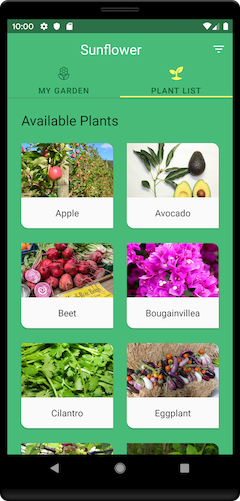

Venha conhecer nossos serviços e os Desenvolvedores que trabalham para entregar o melhor produto e em
menor tempo.
Código do Software
import { Component, OnInit } from '@angular/core';
import { ActivatedRoute } from '@angular/router';
import { PlantsService } from '../services/plants.service';
@Component({
selector: 'app-plant-details',
templateUrl: './plant-details.page.html',
styleUrls: ['./plant-details.page.scss'],
})
export class PlantDetailsPage implements OnInit {
public plant: any;
constructor(
private activatedRoute: ActivatedRoute,
private plantsService: PlantsService
) {}
ngOnInit() {
const id = this.activatedRoute.snapshot.paramMap.get('id');
this.plant = this.plantsService.getPlantById(id);
}
}
Descrição do software
Um aplicativo de jardinagem que ilustra as práticas recomendadas de desenvolvimento do Android com o
Android Jetpack.
Este projeto usa o sistema de compilação Gradle. Para construir este projeto use o gradiew
buildcomando ou use "Import Project" no Android Studio.
Existem duas tarefas Gradle para testar o projeto:connectedAndroidTest- para executar o Espresso em
um dispositivo conectado test- para executar testes de unidade.



Rodrigo começou a ter curiosidade pela programação desde os seus 12 anos de idade, sentindo a vontade
de conhecer um pouco sobre a área de Tecnologia, sempre
saia de sua casa em direção a Banca de Jornal que ficava bem na esquina de onde morava, se
encontrava com seus amigos e conversavam, até ele olhar na vitrine
de jornais e viu uma revista que descrevia sobre a área de programação, ficou tão feliz que pediu
para o dono da banca que deixasse ele ler. O dono viu a alegria dele e autorizou a leitura. Ele
gostou tanto que teve sua Formação Acadêmica em Ciencia da Computação.
Hoje Rodrigo Trabalha em parceria conosco e não medirá esforços para trazer um padrão de qualidade
nos Softwares deselvolvidos em prol de bons resultados e a satisfação de nossos clientes.
 @rodrigo_alves
@rodrigo_alves

Github

Youtube